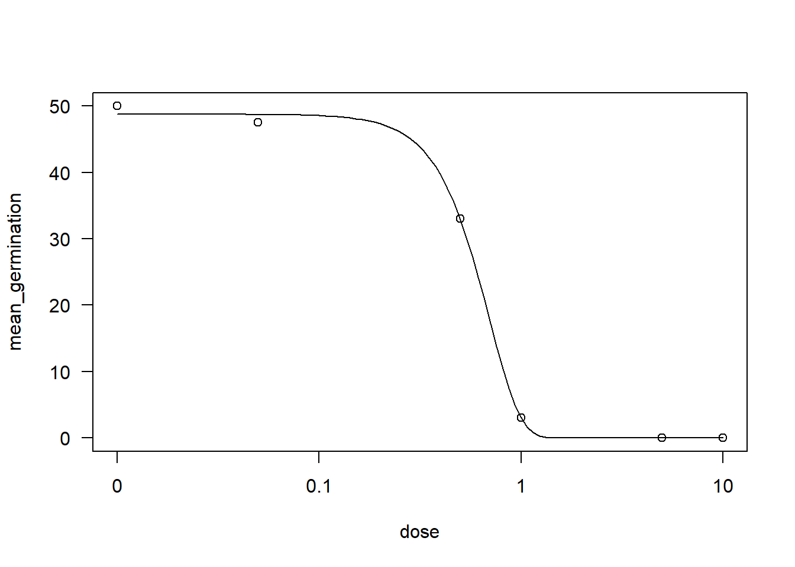

library(gsheet)
library(ggplot2)
library(tidyverse)
pyra <- gsheet2tbl("https://docs.google.com/spreadsheets/d/1bq2N19DcZdtax2fQW9OHSGMR0X2__Z9T/edit#gid=465348652")
pyra2 <- pyra |>
group_by(code, state, dose) |>
summarise(mean_germination = mean(germination))
pyra2|>
ggplot(aes(dose, mean_germination))+
geom_point()+
facet_wrap(~code)
library(drc)
isolado165 <- pyra2 |>
filter(code == "186")
drc1 <- drm(mean_germination ~ dose, data = isolado165,
fct = W1.3())
AIC(drc1)[1] 20.97861plot(drc1)
ED(drc1, 50, interval = "delta")
Estimated effective doses
Estimate Std. Error Lower Upper
e:1:50 0.612064 0.015429 0.562963 0.661165summary(drc1)
Model fitted: Weibull (type 1) with lower limit at 0 (3 parms)
Parameter estimates:
Estimate Std. Error t-value p-value
b:(Intercept) 2.832159 0.213496 13.266 0.0009257 ***
d:(Intercept) 48.767893 0.716131 68.099 6.978e-06 ***
e:(Intercept) 0.696626 0.018156 38.368 3.895e-05 ***
---
Signif. codes: 0 '***' 0.001 '**' 0.01 '*' 0.05 '.' 0.1 ' ' 1
Residual standard error:
1.009228 (3 degrees of freedom)library(ec50estimator)
df_ec50 <- estimate_EC50(mean_germination ~ dose,
data = pyra2,
isolate_col = "code",
interval = "delta",
fct = drc::LL.3())
df_ec50 |>
ggplot(aes(reorder(ID, Estimate), Estimate))+
geom_point()+
geom_errorbar(aes(ymin = Lower, ymax = Upper), width = 0.1)+
coord_flip()